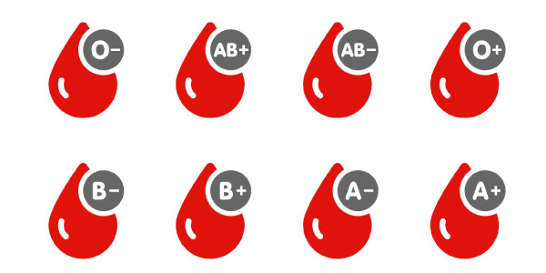

Não sabe seu tipo sanguíneo?
Sem problemas! Aqui estão algumas formas de descobrir:
- Verifique seu cartão de doador de sangue (caso já tenha doado).
- Consulte exames de sangue anteriores (hemograma completo ou tipagem sanguínea).
- Vá a um posto de saúde, hospital ou laboratório e solicite um exame de tipagem sanguínea.
- Participe de campanhas de doação de sangue — lá eles informam seu tipo após a doação.
Dica: Ter essa informação pode ajudar a salvar vidas!